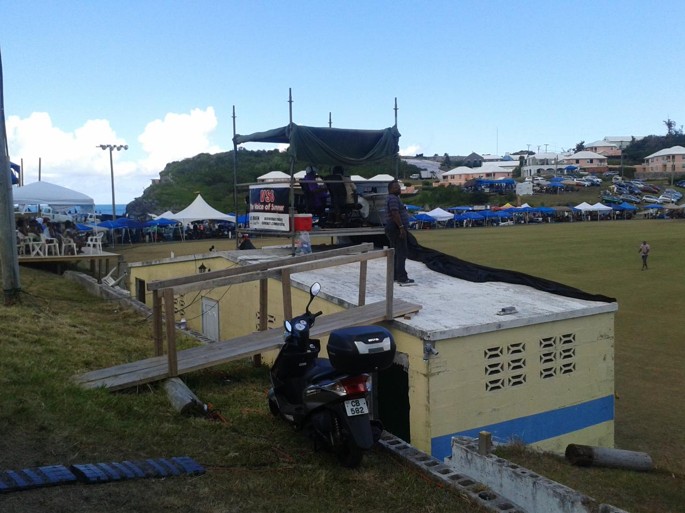

Magic Roundabouts and Geese
Growing up as children we would watch The Magic Roundabout on the BBC.
It was a five minute children's program with a carousel, Zebedee, Dougal the dog and Dylan the rabbit.
Each episode ended with Zebedee saying, "Time for bed", before springing off, literally.
As we got older we might watch a bit of the news that followed.
Roundabouts around the world
Around the world, traffic rules vary quite a bit. Here are some examples.
France
In France roundabouts used to be much less common than in the UK.
The early traffic rule was essentially, "priorite a la droite". This rule dated back to horses and carriages and mostly they could see each other coming for a good way, it was simple to slow down and give way to those from one side.
Another key rule, is which side of the road to drive on. The French, like most of continental Europe, drive on the right.
Looked at from above, the French go anti-clockwise around roundabouts.
So, when they arrive at one, those already on the roundabout give way to new arrivals, coming from the right.
This works well with light traffic. With heavy draffic, things can fall apart: once the roundabout is full of cars nobody can go anywhere, although if you are just taking the first right then you'll probably be ok.
Arc de Triomphe
Now this is more like The Magic Roundabout. I have no idea what the rules are. Rumour has it that insurance companies exclude any accident that happens here.
British Isles
Here they drive on the left and go clockwise round roundabouts.
You give way to those already on the roundabout. Those already on can keep going, those arriving have to wait for it to be safe to enter.
So, like the French you are giving way to those on the right.
Again, it can work well it depends on the traffic volume and pattern.
Swindon
Swindon actually has a Magic Roundabout.
It is a crazy construction of five roundabouts with another roundabout inside them all.
UK rules apply, so once you get on the thing it is like a roller-coaster, just go with the flow.
When the accidents happen, people are usually moving pretty slowly.
North America
Roundabouts used to be far less common in North America. Four-way stops are the order of the day.
You arrive at the junction and stop. If no-one else is there then you can proceed, others arriving after you should give way.
Now this can lead to the Canadian stand-off. You arrive at a roundabout just as someone else arrives. There then follows an elaborate dance where you both just sit there waiting for the other to go first, often accompanied by hand-gestures. Dead-lock is not uncommon.
Ottawa
There is a roundabout near the Experimental Farm that itself seems to be a wonderful experiment in mixing British and French roundabout rules.
Back in the day it was probably a four way stop, a simple cross-roads.
Let's pretend there is a north-south (NS) road crossing east-west (EW) and the NS is the bigger road.
If you are travelling NS or SN, you can pretent your are French and drive straight on to the roundabout. Those coming from an EW direction will give way to you.
If you are turning left, then you will have to give way to traffic entering on the NS road.
Now if you arrive on the EW road you have to give way to traffic already on the roundabout.
So this is a complicated mixture of giving way to the left or right depending on where you are on the roundabout.
Going backwards round the magic roundabout
* please don't try this *
Traffic arriving from east (or west) could do a Pierre Trudeau, behind the Queen pirouette, turning 180 degrees to enter the roundabout backwards.
In this way, the give way to traffic on your right rule ensures the traffic that you need to giver way to is always coming from your right.
Once on the roundabout another pirouette should be done, having done this, again give way to traffic entering from the North/South road, which is again on your right.
This also ensures if you exit on this route you are facing the right way.
If continuing around the roundabout, another pirouette should be performed after passing the north/south road. Hence, you will again be going backwards on the magic roundabout. With your right side to the centre of the roundabout there is no need to give way.
When I was much younger my mother one night announced she felt a little typsy. As a curious child I asked what that was like. She said, "it is like I am going backwards on the magic roundabout".
Like I said, don't try this on the road.
Johnny Barnes
In Hamilton, Bermuda there are several roundabouts.
But there is one special one. It is known as The Johnny Barnes roundabout and has its own magic.
It is indeed magic. Every weekday, between 5am and 10am you will see Johnny Barnes. He has been waving to traffic and dispensing love at the roundabout since retiring from the Bus company. He is now in his 90's.
Bermuda has its own road rules. Mostly following the British. But the horn only really gets used to say hi to friends and cousins.
If you see a friend trying to get out of a small side road you might well follow the "priorite a la droite" rule and wave for them to go ahead of you, even though you have right of way. The roads are narrow, the speed limit is 20 mph and a little give and take makes it a better place for everyone.
But if you are new to the island, watch out for vehicles stopping to let people out of tiny driveways and side roads.
What about the geese?
Last week the Mighty Blades played Swindon. Those brave fans that made the journey down to Swindon went there knowing they would have to negotiate the Magic Roundabout.
Being Blades fans, they were probably expecting the worst and a heavy defeat. I believe all the fans got through the roundabout unscathed.
As for the game, well the new manager, Nigel Adkins, played a motivational video before the game. Google "geese sufc" and you should find it.
It explains how geese are able to travel 70% further by flying in a V formation. How one goose will lead and when tired drop back into the formation and let another take the lead.d
If a goose is tiring and struggling, two other strong geese will drop down to the ocean with the struggler and stay with it until it either dies or makes a recovery. They will then fly together to rejoin the flock, or tag onto another flock following behind.
Magic Roundabouts and Mother Geese
When I was younger, my mum was my Magic Roundabout. She would watch the world circling around her and find ways to change the paths of those that needed to be on a different path, or gently put together those that would benefit from each other.
I now have another Magic Roundabout in my life. Mum's are magic.
Census Survey
Introduction
The Bermuda Government, Department of Statistics has put out a Request for Proposal (RFP) for a web-based solution to support on-line census.
Below are some thoughts on how Free Software could form the solution.
The census raises many complex issues of privacy, accessibility and access to information. In short, is has all the features of a typical software project.
Free Software Solution
Most, if not all, of the pieces required to build this system already exist as free software.
This software is free in the sense that it gives you freedom. Freedom to examine the software, freedom to look how it works, freedom to change it as you wish.
Freedom to pass the software on to others should you wish, so long as you give them the same freedoms you received.
A prototype can be built from these pieces in around 20 hours of development.
There are Bermudians with the skills to do this and the time to devote to such a project.
In some cases they will be exploring new concepts, but that is the nature of IT.
There are many others they can call on to assist should they need guidance, including the millions of people around the globe who contribute to free software.
Accessibility
Accessibility is often neglected in software.
Many free software tools have good support for accessibility.
Generally, a framework is provided to address a wide range of accessibility issues.
Everyone has different challenges working with computers.
- vision
- hearing
- motor movements
- speech
- language processing
- reading
- writing
- fear
- the software itself
- citizens access to information
Bermuda is an international island. English is the dominant language.
Documents are generally produced in English.
However, the island has many nationalities living here and also has many Bermudians who have travelled and lived abroad.
There are also distinct communities within Bermuda with their own language, culture and history.
And, of course, Bermuda is a popular travel destination, with many nationalities paying visits.
Yet there is very poor support for languages other than English on most Bermuda related websites.
A free software solution would accommodate translations. Further, it would allow anyone to contribute to those translations.
Free software: means you can adapt for differing needs, since you have the code. Without the code you are tied to a third party.
Further others can help you. A free software census solution for Bermuda may be usable in many other juristictions. Bermudians who develop such software would be able to work with others wherever in the world they may be.
Public Access To Information
Census data is invaluable in many ways. It provides data that can guide public policy.
TODO: Anology: vaccination: having your children vaccinated protects them against illness, but also reduces the chance of epidemics breaking out. There are small risks to every vaccination, but the benefits to society can be significant. For example, consider the elimination of polio, a disease that affect large numbers of people in the past.
In the UK there have been censuses since 1831 (may have been earlier).
Collecting the data back in that day was a huge task. At the time it gave vast amounts of information about poplulation sizes, household sizes and the age profile of the population and their occupations.
All the data was hand written. Pages of data might have totals and there were presumably clerks creating aggregate statistics.
Nowadays, genealogists find the census data both fascinating and invaluable as they trace family history.
The UK has been digitising this data over the last few years and making it available on line.
A free software solution to the census would anticipate PATI requests by building access to information into the system.
Rather than wait for PATI requests and have to then examine data to see what should be released, the decisions about what should be released, when and to who will be made up front and built into the solution.
A system can be built that will only release certain information after some specified period.
Some data may need reviewing after some number of years and released or re-sealed based on that review.
Transparency and Privacy
It is assumed that aggregate data from the census will be made freely available to citizens. Our solution will include support for such access.
It is recommended that any data of a sensitive nature be treated appropriately, including the physical security of any computers storing the data.
One possibility is to try to build a system that only stores aggregrate information.
It should also be noted that in a small community like Bermuda aggregate data, especially when combined with other similar data can remove annonynimity.
One recommendation would be to encourage community discussion about the census questions and have the community guide the decisions regarding privacy and access to information.
Collecting more personal data that will be stored in some sort of time capsule for the benefit of future historians and genealogy.
Computer insecurity
In view of all the high profile data breaches that the world has been experiencing over recent months it should be apparent that storing sensitive data on computers is not an easy task.
Our solution will recognise this fact and propose appropriate measures for storing more sensitive data.
However, it would be our recommendation to only collect data that the residents of Bermuda are comfortable in sharing.
Maintenance and Development
With a free software solution future maintenance and development of the software can be performed by anyone with the skills. The local poplulation will have all the tools they need, they just need to learn the skills needed.
Further, a well designed free software census would be usable in other jurisdictions.
If developed here in Bermuda by Bermudians it would create opportunities for the team to work elsewhere in the world.
Free Software Centre
Ownership of code
The government, not the developers would own and code developed for the site.
It should be noted most of the code already exists and is free software.
It is suggested that any code written for the project be itself released as a free software project using the GPL license.
Existing Free Software solutions
Appendix A: Python and Django
Django
Django Quiz
Appendix: Project Jupyter
Humans in different parts of the world speak different languages.
Humans have also developed many different languages for communicating with computers.
Learning these languages can take considerable time and effort.
For most of the history of modern computing, communicating with other languages has been difficult.
In effect, the plethora of languages has worked to Balkanise the IT world.
Project Jupyter is just one project that is helping languages work together.
Jupyter is a tool that supports virtually seamless interoperability between 50 different languages, from python, to perl, C++ to C#, Bash to Brainfuck, erlang to lua, matlab to php.
Choosing tools
Developers invariably like to use the tools they know best. They understand them, know what they are capable of and know many of the risks they will encounter using those tools to solve a problem.
Starting a project with a new tool presents many additional risks:
- will it work as advertised?
- How much time will it take to learn?
For an organisation starting out in the free software world the choice can be daunting.
Further, any large organisation will likely end up using many different languages.
Whilst there are inefficiencies in this approach, there are advantages, just as with growing crops: monoculture leaves an organisation vulnerable to anything which threatens that ecosystem.
Variety gives resilience, but at some cost.
Projects such as Jupyter help support that variety and reduce the costs.
If a particular technology choice is proving hard to support, porting to another Jupyter supported language is always an option.
Fred Update
Fred formed way in the east of the Atlantic. I believe it was already a hurricane going over the Cape Verde islands. I was shown pictures today of seas damaging a pier. I have not heard too much more about damage.
Six years ago, Fred formed around the same area a little further south, but did not intensify as fast. It did become a hurricane, then dissipated as it curled, for a short while was heading easterly, then got pushed back westward. By this time it had fallen apart and it did not get organised again, but the remnants of the storm tracked a good way across the Atlantic.
Looking at the discussion of Fred, it is likely to be pulled apart in the short term. Then the track forecasts give a range of possibilities, including heading westward.
Latest (5AM AST, 1st September) forecast discussion:
http://www.nhc.noaa.gov/text/refresh/MIATCDAT1+shtml/010849.shtml
These discussions tend to be very helpful in gauging how much confidence the forecasters about the forecasts.
These days, both track and intensity forecasts can be pretty accurate out to 24 hours or so.
This paragraph from the discussion has a lot of information in it:
Fred is expected to move between west-northwest and northwest for the next 72 hours as a mid-level ridge to the north of the cyclone gradually builds westward. After that time, a turn toward the north-northwest and north is forecast due to a deep-layer trough currently over eastern Canada that is expected to dig southeastward over the central Atlantic and erode the ridge. The NHC model guidance is in decent agreement on this developing pattern change. However, there are significant differences in the model solutions with the HWRF, GFS, and GFDL models keeping Fred stronger and making the northward turn sooner, whereas the weaker solution models like the UKMET and ECMWF take a weaker and more vertically shallow cyclone farther west before turning it northward. The official forecast track is a little south of the previous advisory track, mainly due to the more southerly initial position, and follows a blend of the weaker UKMET and ECMWF solutions.
At the end, we learn the current forecast track is further south than the previous advisory. The discussion notes this is mostly because Fred did not move as far north as expected over the previous period.
Disagreements in models are usually informative, often indicating there is more uncertainty in the forecast. Sometimes the forecasters have good understanding of why the models are disagreeing, different models have different strengths.
Bermuda Weather
http://weather.bm/images/surfaceAnalysis/Latest/Atlantic.gif
{kind=link}
National Hurricane Centre
http://weather.bm/images/surfaceAnalysis/Latest/Atlantic.gif
Erika, Andrew, Danny and Fred
The last few weeks the Atlantic hurricane season has got more active.
Danny never really got started, was blown apart by sheer, but no doubt spawned a lot of thunderstorms.
Flooding from Erika has resulted in numerous deaths in Domincan Republic.
Erika has fallen apart, but again there will be a lot of thunderstorms along its path. There is a lot of moisture in the atmosphere.
Erika
Early forecasts had the most likely track heading over Hispanola, Then curving, but likely being blown apart by sheer from strong upper atmosphere winds related to El Nino.
This is in fact very close to what actually has happened.
Track forecast
The weather models started to suggest the storm would curve more northerly. This all involves really complex systems that stretch over thousands of miles.
So the models most likely path was more northerly, and that might take it on a path to hit Florida.
At one point the most likely track was heading all up the east coast of Florida, without making landfall. If it had held together it might of intensified over hot water with low windsheer and been a major storm at landfall in the Carolinas.
Throughout this period there was always the possibility of heading over Hispanola, but it wasn't the most likely path.
Andrew
Andrew formed in a similar season to 2015 with a high El Nino.
It took a more northerly track, steered north of the Caribbean, then turned straight into Florida.
I think a comparison of Andrew and Erika, Danny too, would be interesting.
Fred
Hurricane names run on a six year cycle. So, there are six lists, that repeat every six years.
If a storm becomes significant in some way, usually the more intense and damaging storms that hit land, the name gets retired from the list and is forever associated with that storm.
So, we have Fred. Now for me, Fred means Fiery Fred Trueman, Yorkshire and England fast bolwer. I never saw him play, but often heard him commentating on test matches.
So some day we will see a Fiery Fred storm.
A storm named Fred has just formed. Like Erika, there is a fair amount of uncertainty on what path it takes and how intense it will get.
More information
Michael Johnston has also been blogging about the recent storms.
The raspberry pi super computer
The raspberry pi 2 comes with around 6 times the processing power of the original pi.
It is still fairly low powered, but it is interesting to compare the pi with some older computers that were considered powerful in their day.
The pi comes with an ARM 7, quad-core processor. It also has a Broadcom graphics processor that can potentially be used for compute intensive work.
It also comes with 1GB of memory.
For disk storage the nornal approach is to use a micro SD card. There are 16GB cards that give 45MB/s read/write capability.
For less than $1000 you can get 20 pi's, with fast SD cards. The result is a machine with 80 cores, 16GB of memory and 320GB of disk, with a combined bandwidth of 900MB/s read and write.
These things are low power, so a 20 pi machine would require just 100 watts of power.
It is reasonable to assume that more powerful devices will be available in he future.
In short, computing power is becoming very, very cheap.
Cray-XMP
To give some indication of how cheap compute power has become, this comparison to a Cray-XMP shows that the older Pi B+ has very similar compute power to the Cray-XMP.
When you compate the inflation adjusted price tags you see how cheap compute power has become.
The Pi 2 is roughly six times the power of the B+. Hence 20 of those gives you 120 Cray-XMP's. For $1000.
Renewable energy
One criticism often directed at renewable energy is that sun, wind and wave are not reliable. In order to reliably meet peak demand much it is necessary to have much more capacity than is needed on average.
One way to mitigate this cost is to have uses for the spare capacity.
One possible use is to have a compute farm to mop up spare capacity. This works particularly well if you have long running computations that can be used to mop up spare compute cycles.
Bitcoin mining is one potential application.
Red and White v Blue and White
Last Saturday there was a big cricket match at Lord's.
Not the Lord's where England were falling apart as the Aussies were dominating the second test, but Lord's in St David's, Bermuda.
Bailey's Bay were playing Cleveland County in what is known as the Eastern Counties.
Each team in Bermuda has its colours, Bay are red and white, Cleveland are blue and white.
I come from Sheffield, UK, a city divided between the blue and white of the Owls and the red and white of the Mighty Blades. I follow the Blades, so it was natural for me to be cheering for Bailey's Bay.
We had a slow start to the day and it was a long (for Bermuda) ride on the moped to St David's, so we didn't get to the ground until just before lunch.
As we entered we were greeted by a larger than life character in red and white. Once I took out my red and white, cat in the hat headgear he directed us towards the Digicel tent.

The game was nicely poised, with Cleveland batting first and on about 80 runs for 4 wickets at lunch.
After lunch the Bay bowlers dominated and Cleveland were bowled out for 127 in 49.3 overs.

Lord's is a wonderful ground, right by the ocean, with natural banks on which people build stands. Between innings we went for a walk round the ground and took some pictures.

And then there is the precariously perched commentary position that you have to walk the plank to get to:
Now being a Blades supporter I have got used to my team snatching defeat from the jaws of victory. The target of 128 that Bay were set should have been easily within their grasp, but we were about to witness one of the most bizarre afternoon's cricket there ever was.
Bay lost two early wickets, but then regrouped and the batsmen were starting to open up at 50-2. Cleveland had a couple of strong appeals turned down. There was a strong appeal for a catch, but it was one of those where it was hard to tell if the ball had been blocked into the ground or hit the ground and come off the bat. The umpire gave the benefit of the doubt to the batsman.
Cleveland protested and for 40 minutes chaos ensued. Both coaches, the president of the Eastern Counties and even a policeman took to the pitch to try and get the game restarted.

Soon after the restart, there was another delay for a drinks break. The batsmen were finding it difficult to get into any sort of rhythm and first ball after the break a wicket fell.
After this wickets fell steadily, but Bay always looked like they would make it. Until, after 30 overs, with the scores tied and Bay with just 2 wickets remaining the umpires declared the game over.
With the scores tied, Cleveland, as holders, were declared winners.
It reminded me of the infamous F.A. Cup tie when the Blades were holding their own against an Arsenal side. The ball was kicked into play for an injury. The resulting throw was sportingly thrown back to the blades players, but Kanu did not seem to understand what was happening, raced onto the ball and slotted it into the net.
Arsenal went on to win, but Wenger graciously agreed to replay the game. Of course, the Blades went on to lose the replay, but at least the game was not decided by this bizarre incident.
I read today that the Cleveland coach was very unhappy with his sides behaviour, perhaps he will follow Wenger's example and ask for the game to be replayed. However, that might not be possible given the busy summer cricket schedule here in Bermuda, with Cup Match [2] less than two weeks away this might not be an option.
Today's Royal Gazette has a full page editorial on the game. There are also rumours that Cleveland have been stripped of the cup.
It is never dull following the Red and White wizards.
So much for the cricket, the day itself was fun from beginning to end. Unfortunately, I had packed the bag of stuff to take to the ground, so instead of drinks and food and sunscreen we had an assortment of raspberry pi's, humidity sensors, air pressure sensors, wires, breadboards and a netbook.
There was food in the clubhouse, yellow and blue, St David's colours. So we were able to find some chips that weren't made of silicon. And the rum swizzle went down very smoothly.
The banter in the crowd rarely stopped, with fans from both sides sitting enjoying together.
Cricket in Bermuda is very much something you go to watch with family and friends. Worst case, you have a day in the sunshine in a beautiful setting, with people you love.
Next stop the blue and red of Somerset playing the light and dark blue of St George's. Cup Match!
| [2] | Cup match is a two day game between the Red and Blue of Somerset and the dark and light blue of St Georges. |
Sixty-seven Minutes
Nelson Mandela Day¶
July 18th is Nelson Mandela's birthday, he would have been 97.
The United Nations calls it Mandela Day, or international day for freedom, justice and democracy. They say:
Every year on 18 July — the day Nelson Mandela was born — the UN joins a call by the Nelson Mandela Foundation to devote 67 minutes of time to helping others, as a way to mark Nelson Mandela International Day.
For 67 years Nelson Mandela devoted his life to the service of humanity — as a human rights lawyer, a prisoner of conscience, an international peacemaker and the first democratically elected president of a free South Africa.
There is more here: http://www.un.org/en/events/mandeladay/
There are a number of events being organised in Bermuda.
It looks like things might kick off early with this event at Bermuda College:
On the Eve of Nelson Mandela Day
Collaboration by:
ADHT, Bermuda College, Chewstick, HRC, Imagine Bermuda
Presents
Another Kind of ‘Happy Hour’
Based @ the Bermuda College Library
FRIDAY, JULY 17TH 5.30 – 7.30 pm
MUSIC……….POETRY………STORY-SHARING
NETWORKING…….NETPLAYING
Meet and Greet,
Even stump your feet,
Although Challenging,
Remember, Life is Sweet!
There are others planning events, I will try to post details here.
I am thinking of going to different events and doing sixty-seven minutes of pi.
Mandela often spoke of Ubuntu:
Ubuntu does not mean that people should not enrich themselves. The question therefore is: Are you going to do so in order to enable the community around you to be able to improve?
Trivia¶
import math
from ipython_doctester import test
# FIXME
# ipython_doctester broken, might be this prob: https://github.com/catherinedevlin/ipython_doctester/pull/5
#@test
def prime(n):
""" Simple primality tester
Examples:
>>> prime(15)
False
>>> prime(67)
True
"""
# Deal with some small numbers
if n <= 2: return True
factor = 2
while factor < math.sqrt(n):
if 0 == (n % factor): return False
factor += 1
return True
# Is 67 prime?
print("Is 67 prime?")
print(prime(67))
# Mandela would have been 97
print("Is 97 prime?")
print(prime(97))
Sixty-seven minutes of $\pi$¶
Angles are measured in different units. Mostly, people seem to use degrees.
A right angle is 90 degrees. The angles in a triangle add up to 180 degrees.
In mathematics it is often useful to use different units, radians.
$\pi$ radians is equal to 180 degrees. So the angles in a triangle add up to 180 degrees.
Now just as there are 60 minutes in an hour, there are also 60 minutes in a degree.
So, 67 minutes of $\pi$ is just 67 minutes from 180 degrees.
$$ x = \pi * 67 / (180 * 60)$$# In python
math.pi * 67 / (180 * 60)
# Now 67 minutes of pi number begins 0.01948.
1948 + 67
So if Mandela had started his campaigning on his birthday in 1948 he would still be at it today.
The UN are just asking you to spend 67 minutes helping others on his birthday.
Future proof your organisation with free software
A few days ago I was hoping to be able to listen to a Bermuda Parliament debate via the Hansard site.
I was actually unable to find a stream for the debates. Further enquiries revealed it does exist, but the streaming uses Microsoft's Silverlight.
This creates a problem, since Microsoft has abandoned Silverlight and it is no longer supported and does not work in many modern browsers.
This is a scenario that gets repeated over and over. In what follows, I will be using government as an example, but you could substitute organisation for government and the story is the same.
So here is a typical scenario:
- Government has a problem to solve, in this case streaming recordings of parliamentary debates.
- Government hires a consultant [1] to implement a solution:
- the consultant chooses the technology stack
- government workers lack time, resources and skills to understand the choices the consultant is making. This problem is exacerbated by outsourcing.
- The Consultant provides a solution with proprietary technologies. In many cases the consultant, not the government owns the software created for the project. The result is the government is locked into that consultant for support and dependent on proprietary software companies for support.
- Proprietary vendor drops support for the tech that was used. Result is unmaintainable websites that eventually have to be replaced. Everything is thrown out and the process is repeated.
In the free software world you get a different story:
- Government has a problem to solve, in this case streaming recordings of parliamentary debates.
- Government IT staff research free software solutions that will solve
the problem
- they look to see what others are using;
- they work with those in other government departments with similar problems;
- they pick some free software projects that solve the problem and that appear to be active and vibrant projects;
- the solution is implemented;
- any software written is released as a free software project.
In this scenario, the end result is something that can be supported not just by the government workers involved in the project, but actually anyone with access to the code, which is in fact everyone.
This includes enthusiasts in the local community, but also people worldwide that are working with the technology that is being used.
Instead of being tied to a single supplier, there is choice and hence a competitive market.
The software will generally be both free as in freedom and free as in cost. The money saved can be invested in developing local talent to support it.
Further money will be saved in the future due to not having to replace the system due to proprietary vendors stopping support. Sure the system will need maintenance and future development, but the government workers will have all the tools they need to do this.
The system will likely require lower cost hardware resource too.
Silverlight and Moonlight
The Silverlight story is an excellent example of this sort of problem.
Microsoft launched Silverlight with a great fanfare, whilst ignoring web standards such as HTML5 that provided very similar capabilities.
It integrated nicely with their .NET platform and they provided some good tools to help with development.
However, Silverlight failed to gain traction and by 2013 Microsoft announced they were discontinuing development, just six years after introducing the technology.
Security and proprietary frameworks
This never ending stream of proprietary technologies, each supposedly better than the previous technology, that is no longer supported, creates serious computer security issues.
Many government websites here in Bermuda use Adobe Flash or Silverlight. The latter is no longer supported, the former has very patchy support.
In any case, government sites using Flash depend on ancient versions that are likely riddled with security holes, yet impossible to support. Further, they simply do not work in modern browsers.
Free software greatly reduces this problem: since the software comes with freedom, those using it have everything they need to support it.
Upgrades are done only as and when significant improvements are made, not on some corporation's timetable, designed to generate revenue for that corporation.
Mono
Silverlight is built on top of Microsoft's .NET framework. .NET is interesting technology, but in many ways not fundamentally different to Java.
The free software community has always been wary of .NET. There is a project called "mono" that is a free implementation of .NET. There were concerns that mono infringes some Microsoft, might use those patents to attack mono.
In fact, this has not happened and recently Microsoft has released a number of .NET related tools as open source, but there is still some wariness about mono. I believe it does have a significant role to play in helping Microsoft shops migrate to free software.
When Silverlight was announced the Mono team started the Moonlight project, a free implementation of silverlight.
The project was abandonned in 2012 after poor adoption of Silverlight and very few sites that use Silverlight work under Moonlight.
The result is that people who used Silverlight are left with an expensive mess.
It is also interesting to read the criticisms of Silverlight in the wikipedia article. Note that many of these criticisms come from companies like Adobe, who were probably more motivated by protecting their ancient Flash technology.
Footnotes
| [1] |
I say consultant but it could be any vendor offering a solution. I don't mean to bash consultants, there are some excellent ones out there, I am planning to be one myself. Consultant's work pattern should be to come to an organisation, empower them to solve their own problem and leave them with all the resources they need to continue to maintain and develop that solution. In short, "get in, solve the problem, empower the organisation, get out". Too often the "empower the organisation" bit is skipped since by not doing that the consultant creates future opportunities for themselves. |
D Bermuda Pi
Bermuda Pi¶
The week 10th to 18th October 2015 there is a lot happening in Bermuda.
-
TEDx Bermuda on 10th October
-
America's Cup racing 16th-18th October
-
The first anniversary of hurricanes Fay and Gonzalo
This creates a good opportunity to run a number of small events around Free Software and Free Culture.
Science, Technology, Engineering and Mathematics STEM is already getting a lot of attention. This is natural in a world where there is so much innovation and change in current times.
Throughout my life technological change has created a lot of wonderful things. At the same time, humanity and social systems are struggling to keep pace with this change.
STEAM adds the Arts into STEM. Making the Bermuda $\pi$ a STEAM powered event seems a natural choice, as the event can then embrace Bermudian culture in general.
At the same time, a hurricane can be viewed as a giant steam engine. Bermuda once ran a steam powered island. How about bringing this to the 21st century: D Bermuda $\pi$, STEAM powered.
Free Culture¶
People in the free software movement have been dealing with this change for some time. They have developed ways of working with technology that not only scale, but also enable people to build systems that evolve naturally over time.
There is a more general Free Culture movement, publishing artistic material under Creative Commons licenses that mirror the free software licenses. Generally, these licenses allow others to build on the ideas and use them in their own work, usually with attribution. Some licenses do not permit commercial use, but many do. Authors choose a license based on their own values.
Weather and hurricanes¶
Given the connection with Fay and Gonzalo some events would focus on hurricane research in the Bermuda context.
Event Ideas¶
A Pi conference¶
- Python
- Raspberry Pi's
- Weather data
- Hurricane simulation
- Damage surveys and damage estimation
- Impact of climate change
- lightning talks
- python and pi's in Bermuda education
Aim for most presentations to be about activities that are going on already in Bermuda, with some visions for future projects.
Invite others from overseas that are doing similar work. Better still, people we are already collaborating with on Bermuda projects.
Focus on the Bermuda context: why is what you are doing a good fit for Bermuda, how can it fit better?
Music, Art¶
Allow local musicians and artists to work and play together. Work on making local artists work freely available on line.
Work on ways technology can complement the arts and vice versa.
Story Telling¶
Have people tell their hurricane stories about last year's storms.
Structure in a way that the stories might inspire new ideas to gather data and do research based on data from previous storms.
- A 5km run over a 3.14 ($\pi$) mile course.
- Pies to eat
- Education, teaching students using raspberry pi
The ideas here are very much inspired by the way python conferences are run
The aim is to have a number of small events, that together make up the Bermuda Pi experience.
Leisure activities¶
Fay and Gonzalo parties would seem a good starter
Music, story-telling, Bermudian food,
Gombeys!
A 5km run over a 3.14 ($\pi$) mile course.
Pies to eat!
Weather¶
Any event during hurricane season has to pay attention to the weather.
Given that one theme of D Bermuda Pi will be hurricane research it
would be unfortunate if the event were hit by a hurricane.
Having said that, it would give the researchers valuable first hand experience.
One project to work on during the week would be getting better estimates of the probability of the event being hit by bad weather.
-
Use long term climate features such as El Nino, the North Atlantic Oscillation, and the Bermuda High to help with contingency planning
-
Develop tools that can help with future event planning
-
Study detailed windfields around the island to better understand the challenges faced by the sailors.
-
Study tides and currents around the island
Murphy's Law is likely to intervene here, so in the meanwhile it would be good if we kept an eye on the long range hurricane forecasts and nearer the time be in a position to work with Bermuda Weather and have plans in place in the event of bad weather.
Sustainablility and environmental impact¶
Renewable Energy¶
Information security and privacy¶
Cryptocurrencies, Bitcoin¶
Bermuda Based Organisations¶
- BIOS station
- Bermuda Weather
- BEST -- sustainablility
- code441
- codtuna
- Pecha Kucha
- Chewstick
- Others?
Coding Sprint¶
Work on free software projects for a better Bermuda.
Reinsurance¶
Many of the reinsurers are using free software and the python language in particular.
It should be possible to have a free software in finance track, perhaps along the lines of the PyData conferences.
Visitors¶
- Free software practitioners and enthusiasts
- Python Foundation
- RedHat
- Canonical/Ubuntu
- Environmentalists
- Meteorologists and climate researchers
Venues¶
This will very much depend on the level of interest
Southampton Princess conference hall, used for TEDx
BIOS station
The BIOS station is close to the airport and close to Paget Island (see below).
Paget Island¶
Paget Island is one of a number of Government run islands. It has basic facilities. It would make an excellent venue for a coding sprint focussing on the environment and sustainability.
Bermuda is an expensive place to visit, some free sofware enthusiasts would be more than happy to come and camp on the island.
One goal would be to make this as inclusive an event as possible, hence creating many different activities that will appeal to different demographics, but also to find ways to mix those people and give them new experiences.
The buildings and infrastructure on Paget Island are in need of some TLC. It would be good to work towards building a place run on renewable energy, environmentally positive where people can come to study how we are doing things in Bermuda.
The philosophy of a camp on the island would be to leave the place better than it is found.
Chewstick¶
Everywhere!¶
Trivia¶
Around the world in 80 days¶
This blog started as a blog for an idea to create an *Around the world in 80 days* idea, to run little competitions where people get miles (or kilometers) for activities. The idea is to see how far round the world you can get in 80 days, with fun twists along the way. One idea was to do an Around Bermuda on Bermuda Bus and Ferry competition. I learnt a lot on the project, but never quite got it out of the door. But that is another story.
There is a version still limping along on heroku: https://tonzone80days.herokuapp.com/
Kudos to heroku. I have a half build project running there, haven't checked it in ages and boom it springs into life.
There are some other pieces coming together that might make the bus thing viable in the near future, just needs a bit of time applied to it.
One thing that I found useful in the project was thinking in an 80 day time horizon. So I was curious about what date is 80 days before 10th October 2015, the date for the start of the Bermuda $\pi$.
Hitting Home on the https://tonzone80days.herokuapp.com/ shows me this:
Jun 29, 2015 is today's date
Sep 17, 2015 is 80 days from today
Apr 10, 2015 was 80 days ago
So time for a little python.
# lets see what python says
import datetime
bermuda_pi_start = datetime.date(2015, 10, 10)
eighty_days_before_start = bermuda_pi_start + datetime.timedelta(days=-80)
print(eighty_days_before_start)
So things need to get started on July 22nd 2015
What's this *Number $-e^{i\pi}$ thing about?¶
There is a wonderful equation in mathematics that links some of the key constants from the world of mathematics.
There is $\pi$, the ratio between a circle's diameter and its circumference. $\pi$ turns up all the time in mathematics.
Then there is e.
Both $\pi$ and $e$ are transcendental, a special type of number, although there are an infinite number of transendental numbers, when they turn up in mathematics they tend to be important.
Then there is 1. The special number that you can multiply any other number by and leave it unchanged.
And there is 0. The special number you can add to anything and leave it unchanged.
The equation is known as Euler's identity:
$$ e^{i\pi} + 1 = 0 $$As this would be the first Bermuda $\pi$ it would:
Bermuda $\pi$ Number 1 = $-e^{i\pi}$¶
Let's make it number one, every year.
Where's de bus
This year's TLF students are considering creating an application to give Bermuda's public transport users up to date information on where the buses and ferries actually are.
Transit authorities that have made this data available have found a number of benefits of bus tracking, including increased usage of public transport.
There is a thriving open source project, One Bus Away which looks like it could be used in the Bermuda environment.
A first step in getting the transport data into the General Transit Feed Specification (GTFS) format. This provides a flexible format for transit data. It is how you specify bus stop locations, routes and timetables. Once you have your data in this format there are a number of projects that you can use to create a powerful transit application.
The One Bus Away project is an open source project that is being used in a number of US and Canadian cities. It should be usable here in Bermuda too.
Google provides good support for transit information and the Netherlands recently became the first country in the world to provide full information via their service.
Whilst this support from Google is good to have, since many tourists will be using google maps whilst visiting the island, there are benefits to being in control of your own data and websites. There are restrictions on the use of Google maps and you are not in control of future development when you use that platform. Further, users may not wish to share their location with Google due to privacy concerns.
OpenStreetMap is an free and open project to make top quality digital maps available. The Bermuda map is quite excellent. Further, there is a good open source javascript library, leaflet to create interactive maps using OpenStreetMap data.
A few months back Open Bermuda started work on a Where's de bus project during a hackathon. The challenge at that time was finding out where the actual bus stops were. It is hoped that it will be possible to get this information and full bus and ferry timetables in machine readable form from the Bermuda Transportation Board (BTB).
Given the small size of Bermuda and its transit network it would also be possible to crowd-source the data for a transit application. If live GPS data is not avaialable from BTB an alternative would be to create a mobile application that public transport users could run and use to report bus locations as well as how full the bus currently is.
There are already some open source GPS tracking systems available such as OpenGTS and Traccar that might be usable here.